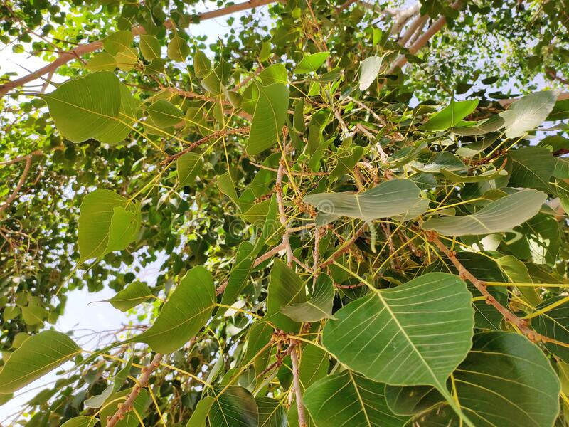

This is Trees 1 page
Topic 1
Topic 2
Topic 3
Banyan
Banyan :
A banyan, also spelled "banian",[1] is a fig that begins its life as an epiphyte,[2] i.e. a plant that grows
on another plant, when its seed germinates in a crack or crevice of a host tree or edifice. "Banyan" often
specifically denotes Ficus benghalensis (the "Indian banyan"), which is the national tree of India,[3]
though the name has also been generalized to denominate all figs that share a common life cycle and used
systematically in taxonomy to denominate the subgenus Urostigma.[4]
Peepal Tree

Peepal Tree :
Ficus religiosa or sacred fig is a species of fig native to the Indian subcontinent[2] and Indochina[3] that
belongs to Moraceae, the fig or mulberry family. It is also known as the bodhi tree,[4] pippala tree, peepul
tree,[2] peepal tree, pipal tree,[citation needed] or ashvattha tree (in India and Nepal).[5] The sacred fig
is considered to have a religious significance in three major religions that originated on the Indian
subcontinent, Hinduism, Buddhism and Jainism. Hindu and Jain ascetics consider the species to be sacred and
often meditate under it. This is the tree under which Gautama Buddha is believed to have attained
enlightenment. The sacred fig is the state tree of the Indian states of Odisha[6] and Haryana.
Pine
Pine :
A pine is any conifer tree or shrub in the genus Pinus (/ˈpiːnuːs/)[1] of the family Pinaceae. Pinus is the
sole genus in the subfamily Pinoideae. The Plant List compiled by the Royal Botanic Gardens, Kew and
Missouri Botanical Garden accepts 126 species names of pines as current, together with 36 unresolved species
and many more synonyms.[2] The American Conifer Society (ACS) and the Royal Horticultural Society accept 121
species. Pines are commonly found in the Northern Hemisphere. Pine may also refer to the lumber derived from
pine trees; it is one of the more extensively used types of lumber. The pine family is the largest conifer
family and there are currently 818 named cultivars (or trinomials) recognized by the ACS.[3]